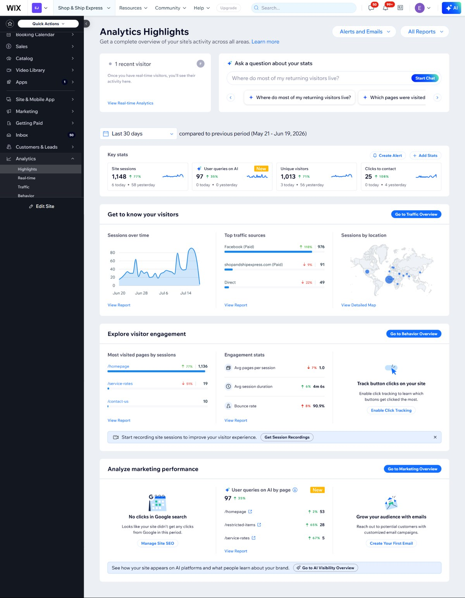

Analytics
Shop & Ship Express Analytics
The challenge
Make website performance signals easier to inspect together.
Key decisions
- Group related metrics.
- Show the important signals first.
- Use the view to surface decisions.
The improved journey
Website performance can be reviewed from one clearer operating view.